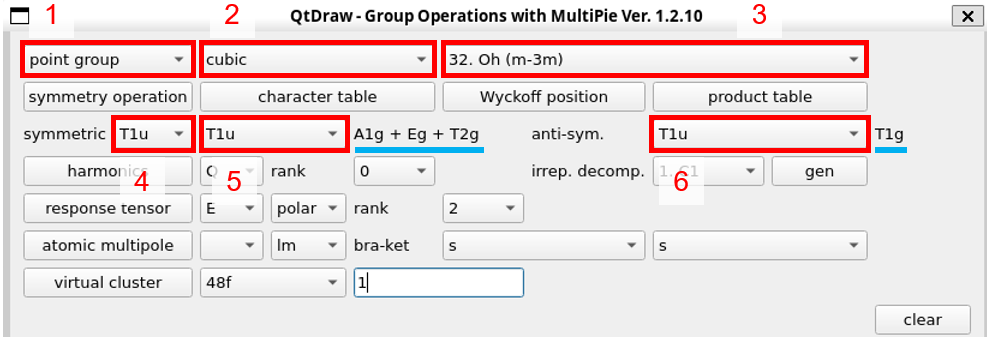
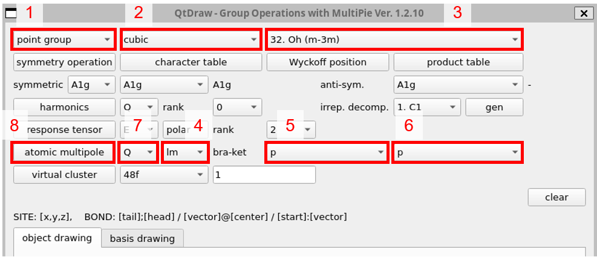
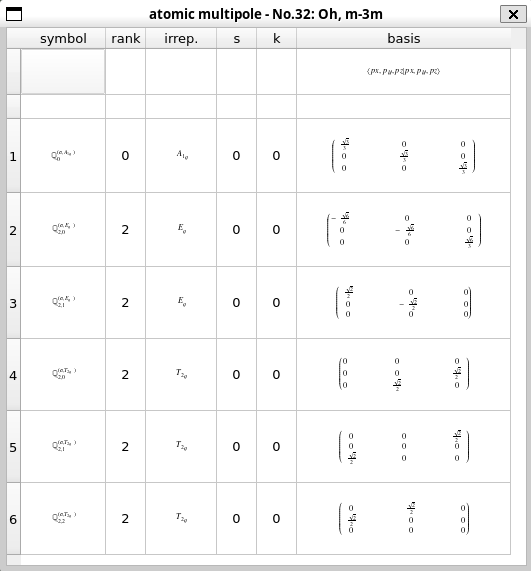
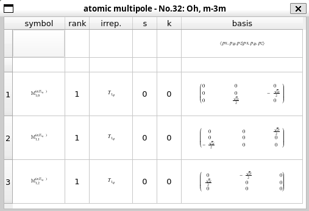
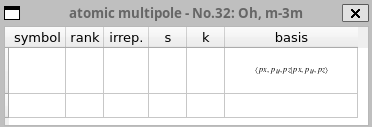
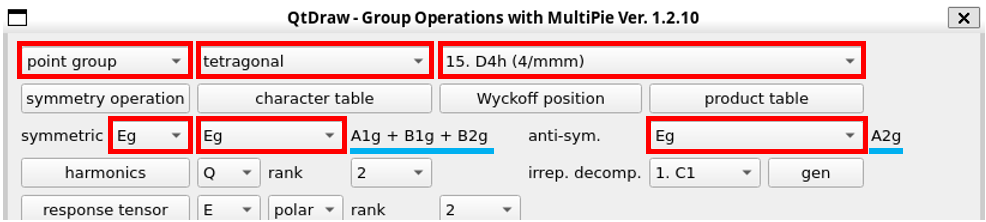
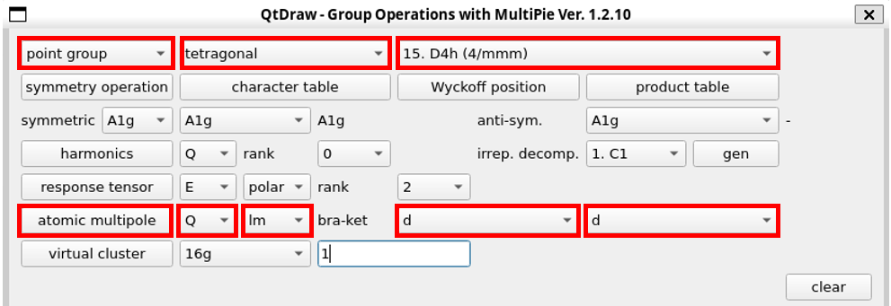
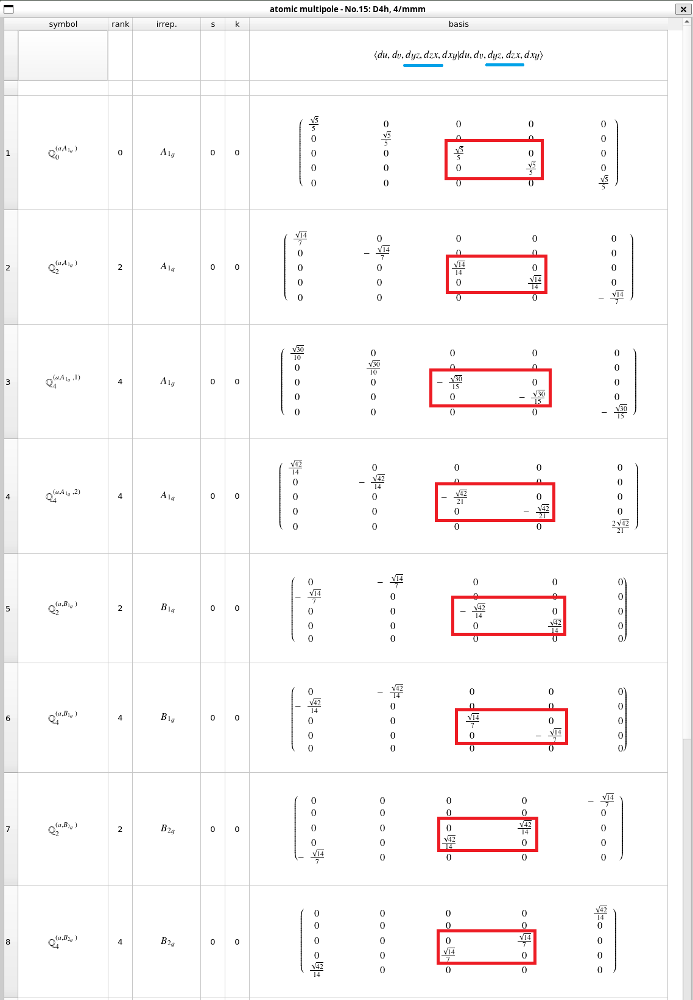
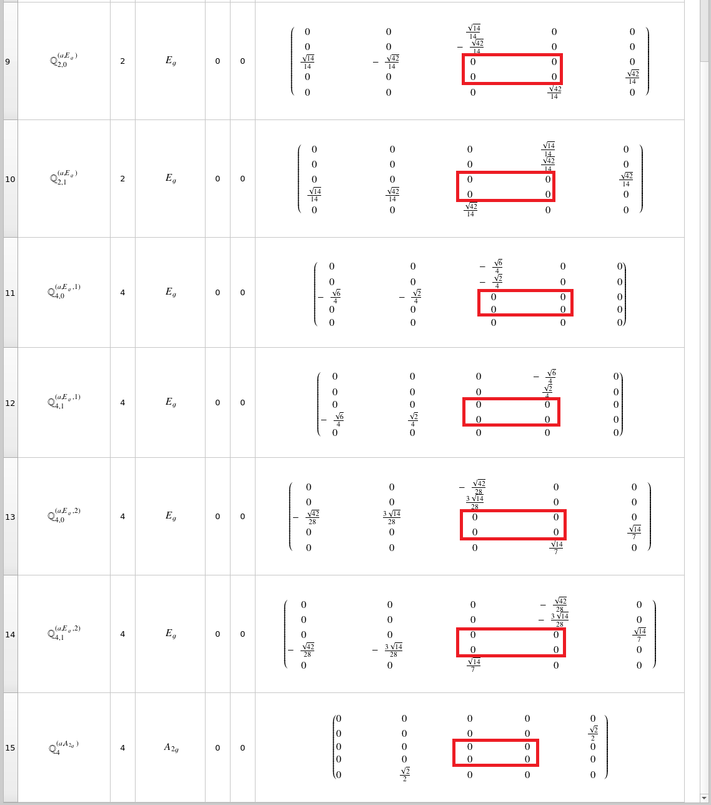
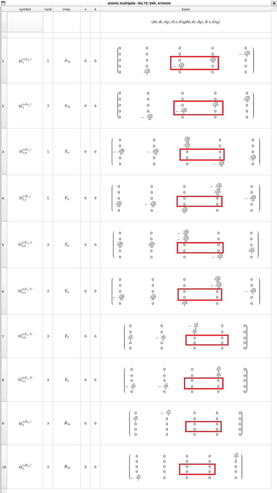

活性な多極子(と行列要素)#
空間反転あり#
例1：p軌道（点群\(O_h\)）#
【固体物理その3：§1.1の例】
まずはp軌道が持つ多極子自由度を例にとり、手順を説明する。 p軌道は\(\{x, y, z\}\)の3つの軌道から成るので、多極子は全部で\(3^2=9\)個ある。 これらの多極子がどのような性質を持つのか調べよう。
2つの方法を順に紹介する。
既約分解#
まずは既約分解を使う。 p軌道は、点群\(O_h\)では\(T_{1u}\)の既約表現に属しており、縮退は保たれている。 この3次元表現内の多極子自由度を考えるには、ケットとブラの積に対応する\(T_{1u} \otimes T_{1u}\)の直積の既約分解を行う。
QtDrawから「MultiPie」を起動する。 表示されるウィンドウの上部のボタンを使う。

まずは点群を選ぶ。1「point group」、2「cubic」、3「Oh」の順に選択する。
既約分解には上から3行目を使う。symmetricの右の2つの欄4, 5で、「T1u」を選ぶ。すると、その右（青下線部分）に既約分解の結果が表示される。この結果から対称積（\([T_{1u} \otimes T_{1u}]\)と表す）は
\[ [T_{1u} \otimes T_{1u}] = A_{1g} \oplus E_{g} \oplus T_{2g} \]と分解されることがわかる。
anti-sym.の右の欄で「T1u」を選ぶと、その右（青下線部分）に反対称積（\(\{ T_{1u} \otimes T_{1u} \}\)と表す）の結果が表示される。この結果から、
\[ \{ T_{1u} \otimes T_{1u} \} = T_{1g} \]であることがわかる。
この例のように同じパリティを持つ軌道間の多極子の場合、対称積は時間反転が偶の多極子に対応し、反対称積は時間反転が奇の多極子に対応する。 以上の結果をまとめると、p軌道内の多極子の分類は次の式で表される。
左辺の\(T_{1u}\)はp軌道の属する既約表現を表し、右辺が多極子自由度を表す。 \(+\), \(-\)は時間反転対称性の偶・奇を表す。
既約分解により、多極子自由度の対称性はわかるが、それらのランク（単極子、双極子、四極子、…）まではわからない。 それを知るには多極子演算子の行列要素を調べる必要がある。
行列要素#
QtDrawから「MultiPie」を起動する。 表示されるウィンドウの上部のボタンを使う。

まずは点群を選ぶ。1「point group」、2「cubic」、3「Oh」の順に選択する（ここまでは既約分解の場合と同じ）。
多極子を表示するには「atomic multipole」の行を使う。4の欄で、スピンを考慮しない場合は「lm」（角運動量が整数）を、スピンを考慮する場合には「jm」（全角運動量が半整数）を選ぶ。今回は「lm」を選択する。
bra-ketの右の5, 6から軌道を選ぶ。今回はp軌道内の多極子自由度を知りたいので、5と6のどちらも「p」を選択する。
7の欄で、表示したい多極子の種類をQ, G, T, Mの中から選ぶ（それぞれ、電気、電気トロイダル、磁気トロイダル、磁気を意味する。すべての多極子の場合は空欄を選択）。ここでは、まず7「Q」を選ぶ。
最後に8「atomic multipole」ボタンを押す。
新しいウィンドウに次の表が表示される。

「irrep.」の列を見ると、電気多極子は\(A_{1g}\), \(E_{g}\), \(T_{2g}\)の3種類、6個あることがわかる。 「rank」の列から、\(A_{1g}\)は単極子、\(E_{g}\)と\(T_{2g}\)は四極子であることもわかる。
次に、7を「M」に変更して磁気多極子を表示させる。

\(T_{1g}\)の3個の多極子があることがわかる。 これはランクが1なので、磁気双極子である。
これで9個全てそろったが、念のため、7を「G」や「T」にすると、次のような空の表が表示される。

以上の結果から、\(p\)軌道内の多極子自由度は、 1つの電気単極子\(Q_0(A_{1g})\)、 2つの電気四極子\(Q_2(E_{g})\)、 3つの電気四極子\(Q_2(T_{2g})\)、 3つの磁気双極子\(M_1(T_{1g})\) に分類できることがわかる。
例2：\(\{ yz, xz \}\)軌道#
【固体物理その4：§3.2の例3】
二重縮退した\(\{ yz, xz \}\)基底内の多極子自由度を導く。 \(\{ yz, xz \}\)は点群\(D_{4h}\)の\(E_g\)既約表現に属している。 これを確認するには、原子軌道の結晶場状態の手順に従って、d電子（ランク2）の点群\(D_{4h}\)の下での既約表現を表示すればよい（結果は省略）。
既約分解#
まずは、既約分解を使って多極子の既約表現を調べる。 例1の既約分解の表示手順に従って必要情報を入力する。

青線部分の結果をまとめると、多極子の既約分解は次の式で表される。
行列要素#
次に多極子の行列要素を調べて、各既約表現内の多極子の表現を明らかにする。 例1の行列要素の取得法に従って情報を入力する。

\(E_g\)表現内の多極子が知りたいが、既約表現の指定はできないので、bra-ketから「d」を選び、d軌道内の多極子をすべて表示する。 別ウィンドウで次の結果が得られる。
 
一番上の行に基底が書いてあり、\(\{ yz, xz \}\)は3, 4番目（青下線）であることがわかる。 したがって、\(5 \times 5\)行列の3,4行(列)目の\(2 \times 2\)行列（赤枠）が今知りたい行列要素に対応する。
定数倍の違いは除くと1～4番目の\(A_{1g}\)表現の多極子は全て同じ行列になっている。したがって、ランクの最も低いものを採用すると
である。次に、5,6番目の\(B_{1g}\)表現の多極子が同じ行列になっており、
が得られる。そして、7,8番目の\(B_{2g}\)表現の行列から
が得られる。それ以降の多極子は\(2\times 2\)部分の行列要素がゼロなので、Qは以上となる。
次に、M多極子を調べる。

3,4行(列)目の\(2 \times 2\)行列に注目すると、1, 2番目の\(A_{2g}\)既約表現の多極子が同じ行列で表されている。ランクの低い方の名前を採用すると
が得られる。
以上の結果から、\(\{ yz, xz \}\)基底内の多極子は、\(A_{1g}\)の電気単極子、\(B_{1g}\)の電気四極子、\(B_{2g}\)の電気四極子、\(A_{2g}\)の磁気双極子であると結論できる。